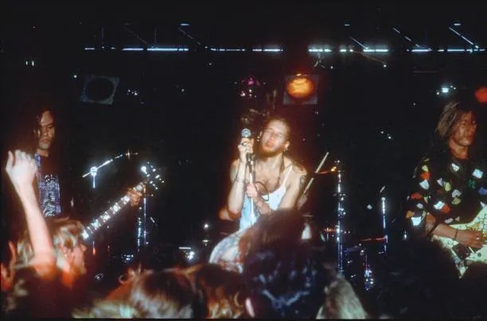
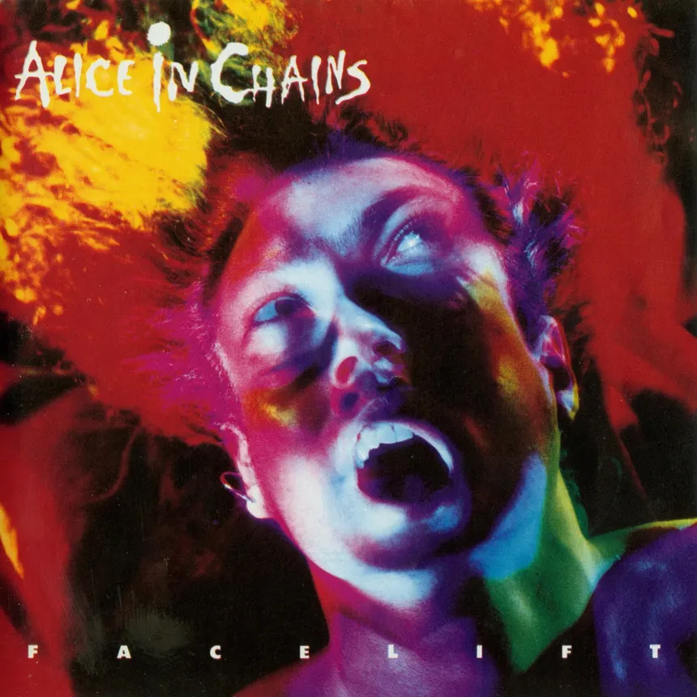
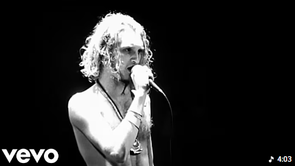

| History |
|---|
|
A banda se formou em 1987, quando o vocalista Layne Staley (ex-Mother Love Bone) se juntou ao guitarrista Jerry Cantrell. Com o baixista Mike Starr e o baterista Sean Kinney, fecharam a formação. O nome "Alice in Chains" foi sugerido por Staley, remetendo a uma fantasia sobre mulheres de couro ("alice in chains" como uma brincadeira com "Alice in Wonderland"). |
 |
| Success |
|---|
|
1990: Lançam o EP Facelift, com o hit Man in the Box. O som era pesado, com vocais melódicos e letras sombrias, misturando heavy metal com o grunge.
|
 |
| Bleed The Freak |
|---|
|
"Bleed the Freak" é um hino de resistência contra a exploração emocional e a falsidade social. O "freak" não é mais vítima passiva: decide parar de sangrar pelos outros e exige que quem o julga também enfrente suas próprias feridas. É um convite à autenticidade, mesmo que isso signifique se isolar. |
 |
Contatos: mrls9@aluno.ifal.edu.br | @rwvthrdev
GitHub